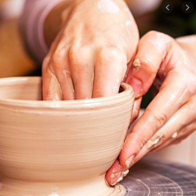
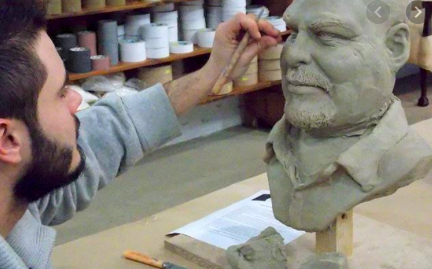
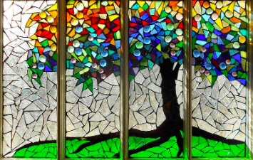
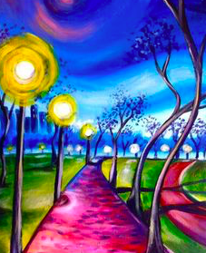

| Hours: | |
| Monday | 11:00am - 7:00pm |
| Tuesday | 11:00am - 7:00pm |
| Wednesday | 11:00am - 7:00pm |
| Thursday | 11:00am - 7:00pm |
| Friday | 11:00am - 8:00pm |
| Saturday | 11:00am - 8:00pm |
| Sunday | 11:00am - 8:00pm |

Pottery is the process of forming vessels and other objects with clay and other ceramic materials, which are fired at high temperatures to give them a hard, durable form. Major types include earthenware, stoneware and porcelain. The place where such wares are made by a potter is also called a pottery. The definition of pottery used by the American Society for Testing and Materials, is "all fired ceramic wares that contain clay when formed, except technical, structural, and refractory products." In archaeology, especially of ancient and prehistoric periods, "pottery" often means vessels only, and figures of the same material are called "terracottas".

Around 600 B.C., Greece developed one of the great civilizations in the history of the world. Sculpture became one of the most important forms of expression for the Greeks. The Greek belief that "man is the measure of all things" is nowhere more clearly shown than in Greek sculpture.

Colored glass has been made since ancient times. Both the Egyptians and the Romans manufactured small colored glass objects.Stained glass gained recognition as a Christian art form sometime in the fourth century as Christians began to build churches. The spread of Christianity throughout Europe is directly related to the expansion of stained glass across the globe and made stained glass the dominant art form of the new millennium. One of the oldest known examples of multiple pieces of colored glass used in a window were found at St. Paul's Monastery in Jarrow, England, founded in 686 AD. The oldest complete European windows are thought to be five relatively sophisticated figures in Ausburg Cathedral.

Painting, the expression of ideas and emotions, with the creation of certain aesthetic qualities, in a two-dimensional visual language. The elements of this language—its shapes, lines, colours, tones, and textures—are used in various ways to produce sensations of volume, space, movement, and light on a flat surface. These elements are combined into expressive patterns in order to represent real or supernatural phenomena, to interpret a narrative theme, or to create wholly abstract visual relationships.